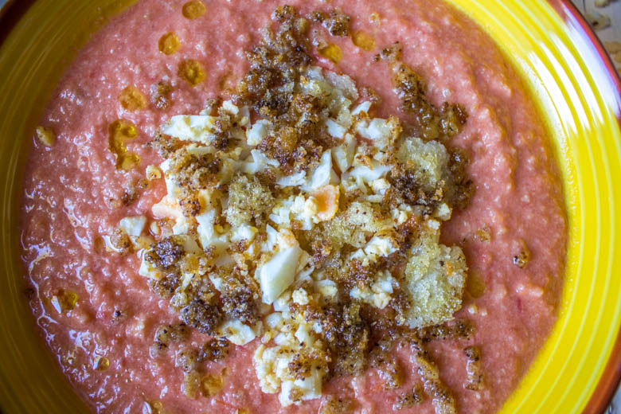
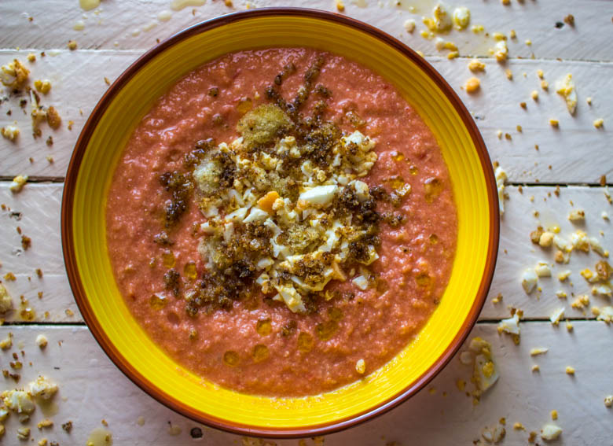

Salmorejo de Cordoue

Aujourd’hui je vous propose un recette tout droit venue du Sud de l’Espagne.
Je ne sais pas quel temps il a fait chez vous ces derniers temps et plus particulièrement ce week-end, mais ici il a fait pas moins de 30°! C’est pourquoi les recettes d’automne sont restées quelque peu au placard et nous avons eu besoin de nous « rafraîchir ». Je profite alors de ce moment pour partager avec vous la recette du salmorejo.
Pas très loin du gaspacho, le salmorejo est une préparation culinaire qui nous vient tout droit de la ville de Cordoue en Andalousie. Le salmorejo a une consistance assez épaisse proche d’une purée et est généralement servi avec des miettes d’œufs durs sur le dessus ou encore des croûtons et du jambon serrano. Ce plat contient beaucoup d’huile d’olive et c’est pourquoi choisir une huile de qualité a ici toute son importance!
Certaines recettes contiennent du vinaigre mais la recette authentique et traditionnelle n’en contient pas et c’est celle que j’ai choisi de vous présenter aujourd’hui.
Vous pouvez choisir de le servir en entrée mais en plat principal c’est tout aussi bon! Place maintenant à la recette.
Ingrédients
- Tomates bien mûres - 600g
- Huile d'olive - 125ml
- Pain rassis - 90g
- Gousse d'ail - 2
- Oeuf dur - 2
- Jambon Serrano - 2 tranches
- Sel
Instructions
- Cuire les œufs dans l'eau bouillante pendant 10 min et couper le jambon en petits morceaux. Réserver
- Couper les tomates en quatre et les mettre dans un mixeur
- Mixer les tomates (si vous voulez un salmorejo bien lisse, vous pouvez passer la préparation au chinois)
- Jeter le pain en morceaux dans la préparation (au préalable vous pouvez le ramollir dans un peu d'eau puis l'essorer) et mixer à nouveau
- Ajouter l'ail haché, l'huile d'olive, le sel et mixer à nouveau le tout
- Émietter les œufs dans un bol
- J'ai fait des croûtons en grattant de l'ail sur du pain arrosé d'huile d'olive que j'ai fait revenir à la poêle quelques minutes
- Verser le salmorejo dans des assiettes creuses et parsemer de croutons, des miettes d’œufs et le jambon sur le dessus
- Arroser d'un filet d'huile d'olive
- Placer au frais jusqu’au moment de servir


Les tips de la communauté
Le Salmorejo reçoit des appréciations favorables pour son authenticité espagnole. Les commentaires reflètent une satisfaction générale face à cette soupe de Cordoue.
Astuces
- Utiliser des tomates de qualité pour le goût authentique du salmorejo
Variantes suggérées
- Ajouter du jambon ibérique pour un résultat plus traditionnel
- Servir avec différents accompagnements selon les préférences régionales